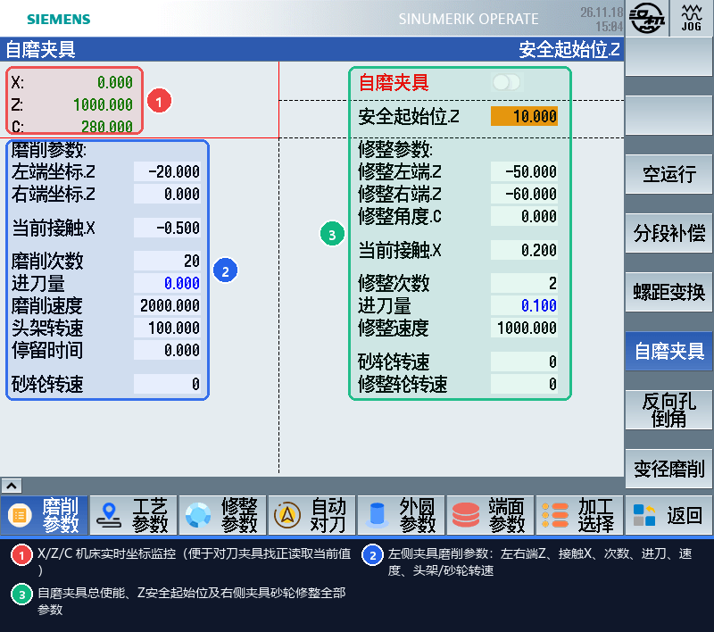
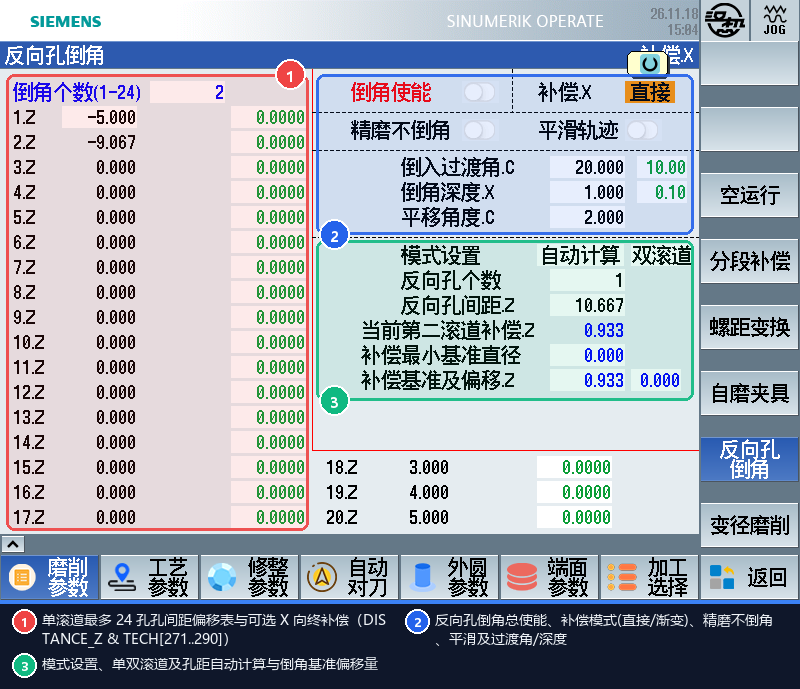
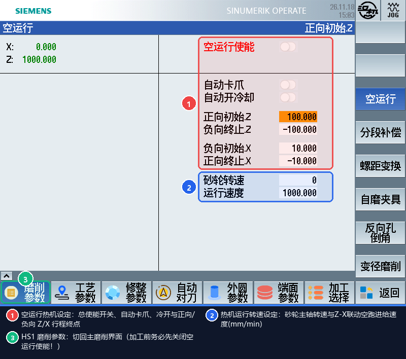
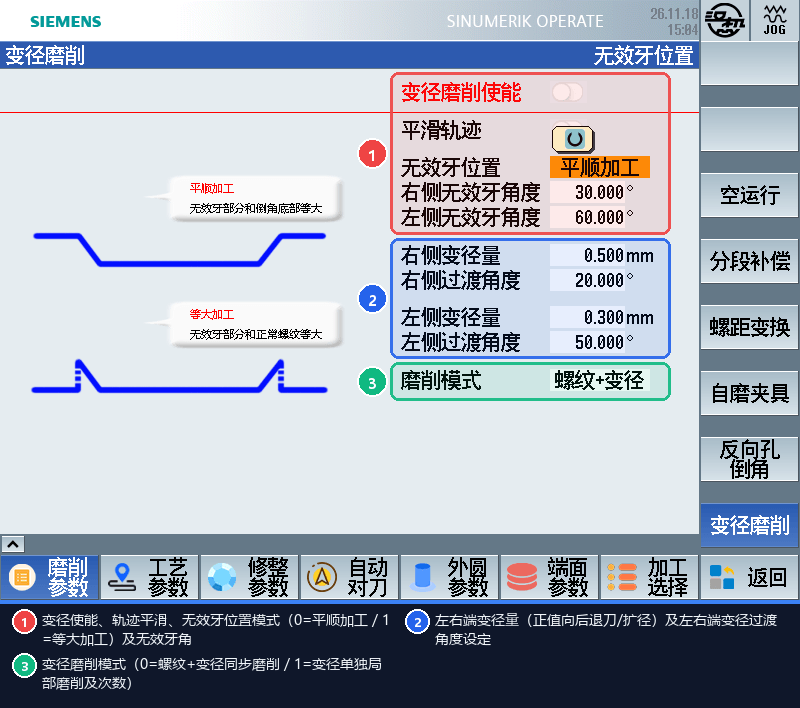
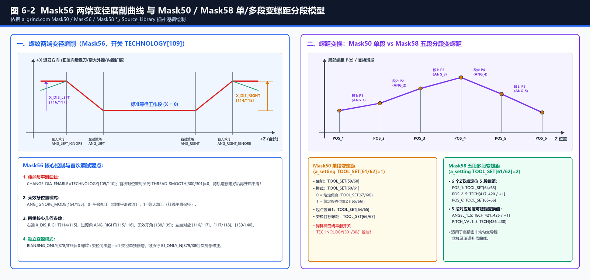

6.4 高级模块（上）：夹具自磨、倒角、空运行与两端变径
在 内/外螺纹磨削参数界面（a_grind.com Mask1 / Mask18）右侧垂直软键区（VS3～VS8），集成了面向高难度工艺的扩展功能模块（空运行 VS3、分段补偿 VS4、螺距变换 VS5、自磨夹具 VS6[仅内螺纹]、反向孔倒角 VS7、变径磨削 VS8）。各模块界面入口均可在 机床配置 → 第五类扩展界面开关 中按需打开或隐藏；其中 VS6 自磨夹具 仅内螺纹 Mask18 提供（外螺纹 Mask1 无此按键），而 VS1 用机械手 / VS2 模拟测试 仅在非磨削中心机型勾选机械手选配（;ifIsNotCenter + ;ifIsHasLoadingArm）时出现在本画面右侧。
本节详解前四大模块；关于 分段补偿（Mask57 / VS4）与单/多段螺距变换（Mask50 / Mask58 / VS5） 请继续阅读 6.5 高级模块（下）。
索引换算提醒：下述所有数组在
.SPF与MGUD.DEF中均为 0-based（如INI[68]、TECHNOLOGY[310]）；若需核对a_grind.comEasyScreen 脚本，请统一执行 HMI 索引 = NC 索引 + 1（对应INI[69]、TECHNOLOGY[311]）。
1. 自磨夹具（Mask53 / VS6 & A_JIAJU_MAIN.SPF）
仅内螺纹机型开放（界面显示由 NC：TECHNOLOGY[232] / HMI：TECHNOLOGY[233] 控制）。用于在机床内部直接修整三爪卡盘/专用夹具卡爪内孔圆度与同轴度，无需拆装工件夹具：

- 总使能与安全位：
- 将右侧开关
使能（INI[68]） 设为 开（值1）；激活后主程序A_GRINDING.SPF优先转入A_JIAJU_MAIN.SPF执行自磨夹具循环而不磨工件； - 设定
夹具磨削 Z 轴安全起始位置（INI[89]），运行前A轴自动归零且Z轴退回至此安全位置。
- 将右侧开关
- 左侧：夹具磨削参数（当 MCP 修整键
$A_DBB[0] == 0运行）：- 测量并输入
左端 Z（DRESSER[60]）、右端 Z（DRESSER[61]）、X 接触坐标（DRESSER[62]）； - 设置
磨削次数（DRESSER[53]）、进刀量（DRESSER[69]）、水平速度（PROCESS[39]）、头架转速（TECHNOLOGY[231]）、停留时间（DRESSER[52]） 及砂轮转速（DRESSER[118]）。
- 测量并输入
- 右侧：夹具砂轮修整（当 MCP 修整键
$A_DBB[0] == 1运行）：- 专门设定夹具磨削砂轮的修整区间
修整左/右端 Z（DRESSER[63/64]）、头架 C 起始角（INI[67]）、接触 X（DRESSER[65]）、修整次数/进刀量/速度（DRESSER[66/67]/PROCESS[36]） 与砂轮/修整轮转速（DRESSER[116/117]）。
- 专门设定夹具磨削砂轮的修整区间
警告：自磨夹具完成后，务必将
Mask53顶部的使能切回 关（0），否则按循环启动将继续磨削卡盘而非工件！
2. 内螺纹反向孔倒角（Mask54 / VS7）
用于在滚动丝杠/行星丝杠内螺母的换向器反向孔边缘自动磨出平滑倒角，消除滚珠进出回珠器时的冲击：

| 参数组 | NC / R 变量 | 功能详解 |
|---|---|---|
| 总使能与曲线模式 | INI[82] / INI[110] / TOOL_SET[17] |
开关反向孔倒角使能；可单独勾选 精磨/终磨不倒角 保护最终齿面精度；是否平滑曲线 建议首次对刀探测位置时保持 否，正式高速倒角时再开启 |
| 倒角轮廓尺寸 | $R[241] / $R[242] / $R[243] |
设定倒角面 C 移动角度、倒角深度与底面 C 保持角度（R243 >= 2° 以防低速加减速形成振纹），支持配置两端预倒角 TECHNOLOGY[237/238] |
| Z 向孔位计算模式 | INI[22] / INI[44/45/46] |
0 手动输入（手工填写 R240 个数 1~24 及各孔起始位置 R244~R267）；1 自动等距计算（给定反向孔个数、间距与起始位补偿自动排布）；2 测头自动探测第一孔推算（需配有自动对刀） |
| 反向孔类型与双滚道偏移 | TECHNOLOGY[386] / TOOL_SET[7] / TECHNOLOGY[67..69] |
支持 0 双滚道等距 与 1 单滚道不等距（独立设置 孔间距 12..1920，TECHNOLOGY[392..411]）；双滚道支持按基准直径计算第二滚道 Z 偏移与直径补偿 |
X 向终磨补偿（TECHNOLOGY[291/292]） |
TECHNOLOGY[271..290] |
当各反向孔倒角深度存在轻微离散时，可按孔号（第 1~20 孔）独立输入 ±0.1 mm 的倒角终点 X 向补偿，并选 直接补偿 或 向下一孔渐变过渡 |
3. 空运行热机程序（Mask55 / VS3）
在冬季冷机开机或长时间停机复产前，用于在未装夹或自动模拟装夹下让机床主轴、冷却系统及各伺服轴预热稳定热变形：

- 打开
使能（GRIND[9]） 设为 开（开启后主程序优先执行B_KONG_YUN_XING.SPF）； - 配置是否随动
自动卡爪动作（TECHNOLOGY[34]） 与自动开冷却水（TECHNOLOGY[66]）； - 设定往复热机边界：
Z 正向/负向起止位置（TECHNOLOGY[35]/TECHNOLOGY[38]）、X 负向/正向起止位置（TECHNOLOGY[39]/TECHNOLOGY[48]）、砂轮转速（TECHNOLOGY[49]） 与轴运行速度（TECHNOLOGY[54]）； - 热机结束后同样记得关闭
使能恢复正常加工。
4. 螺纹两端变径磨削（Mask56 / VS8）


适用于需要两端牙型逐渐退浅或局部让径的滚珠丝杠/特殊螺母：
- 使能开关（
TECHNOLOGY[109]） 与 平滑轨迹（TECHNOLOGY[300]）； - 无效牙过渡模式（
TECHNOLOGY[154]）：设0平顺加工 或1等大加工，配合右/左端无效牙角度（TECHNOLOGY[138/139]）； - 左右端变径量与过渡角：独立设置
右端变径量（TECHNOLOGY[114]，正值后退）/右端过渡角度（TECHNOLOGY[115]） 及左端变径量（TECHNOLOGY[116]，正值前进）/左端过渡角度（TECHNOLOGY[117]）； - 单独运行模式（
TECHNOLOGY[378/379]）：支持选择0 = 螺纹+变径同步磨削或1 = 单独走变径修光并指定变径单独磨削次数；底层子程序F_ZC_START_CHANGE_DIA_A.SPF在独立变径过渡阶段引入DAO_DISTANCE_COE = 1.2外延系数，使倒角段多扫出 20% 滚道衔接行程，防止滚道与倒角交界处产生过切振纹。
继续阅读：关于
VS4 分段补偿（10 段中径/导程分层补偿）与VS5 螺距变换（单段/5 区间多螺距变换）的参数详解与调机方法，请参见 6.5 高级模块（下）：分段补偿与单/多段螺距变换。